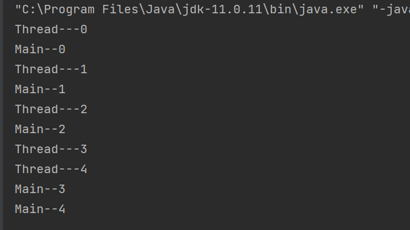
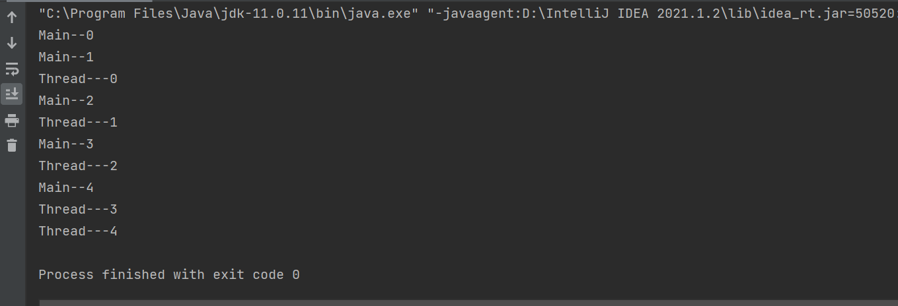
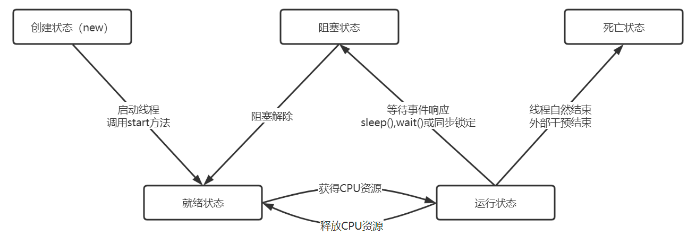

多线程（1）1. 线程简介1.1. 线程与进程1.2. 并发与并行1.3.为什么要用并发1.4.为什么用用多线程而不用多进程1.5.并发编程的缺点1.6.基本概念2. 线程实现2.1.Thread类（继承）2.2.Runable接口（实现）2.3.Callable接口（实现）3. 线程状态
进程
进程是一个具有一定独立功能的程序在数据集上的一次动态执行过程
线程
两者之间的联系
两者之间的区别
频繁的上下文切换：由于上下文切换比较耗时，所以并发累加的速度未必会比串行累加的速度要快
线程安全：多线程编程最难以把握的就是临界区线程安全问题，稍不注意就会出现死锁的现象，一旦产生死锁就会造成系统功能不可用
避免死锁的方式：
同步与异步：通常形容一次方法调用
阻塞和非阻塞：通常用来形容多线程之间的相互影响，如一个线程占有了临界区资源，那么其他线程需要这个资源必须等待该资源的释放，会导致等待的线程挂起，这就是阻塞，而非阻塞则正相反，其强调没有一个线程可以阻塞其他线程，所有的线程都会尝试前往运行
临界区：表示一种公共资源或者说是共享数据，可被多个线程使用，但每个线程使用时，一旦临界区资源被一个线程占有，那么其他线程必须等待
xxxxxxxxxx251package com.thread;2
3/**4 * Thread类创建多线程5 */6public class ThreadDemo extends Thread {7
8 9 public void run() {10 for (int i = 0; i < 5; i++) {11 System.out.println("Thread---" + i);12 }13 }14
15 public static void main(String[] args) {16
17 ThreadDemo threadDemo = new ThreadDemo();18 threadDemo.start();19
20 for (int i = 0; i < 5; i++) {21 System.out.println("Main--" + i);22 }23 }24
25}实现结果为：

xxxxxxxxxx261package com.thread;2
3/**4 * 使用Runnable接口创建线程5 */6public class RunnableDemo implements Runnable{7 8 public void run() {9 for (int i = 0; i < 5; i++) {10 System.out.println("Thread---" + i);11 }12 }13
14 public static void main(String[] args) {15
16 //线程启动方式与Thread方式不一样17 RunnableDemo runnableDemo = new RunnableDemo();18 Thread thread = new Thread(runnableDemo);//代理19 thread.start();20
21 for (int i = 0; i < 5; i++) {22 System.out.println("Main--" + i);23 }24 }25}26
运行结果：

使用多线程实现龟兔赛跑
xxxxxxxxxx601package com.thread;2
3/**4 * 使用多线程模拟龟兔赛跑5 */6public class RaceBetweenRabbitAndTortoise implements Runnable {7
8 private static String winner = ""; //胜利者9 private int len;//赛道长度10
11 public RaceBetweenRabbitAndTortoise(int len) {12 this.len = len;13 }14
15 16 public void run() {17 for (int i = 0; i <= len; i++) {18 //判断比赛是否结束19 boolean flag = isGameOver(i);20 if (flag) {21 break;22 }23
24 //为了使乌龟一定赢，安排兔子在终点前睡一觉25 if (Thread.currentThread().getName().equals("rabbit") && (len - 1) == i) {26 try {27 Thread.sleep(1);28 } catch (InterruptedException e) {29 e.printStackTrace();30 }31 }32
33 System.out.println(Thread.currentThread().getName() + "-->跑了" + i + "步");34 }35 }36
37 //判断比赛是否结束38 public Boolean isGameOver(int steps) {39
40 //判断是否有胜利者41 if (winner != null && !"".equals(winner)) {42 return true;43 } else {44 if (steps >= len) {45 winner = Thread.currentThread().getName();46 System.out.println("winner is " + winner);47 return true;48 }49 }50 return false;51 }52
53 public static void main(String[] args) {54 RaceBetweenRabbitAndTortoise race = new RaceBetweenRabbitAndTortoise(100);55
56 new Thread(race, "rabbit").start();57 new Thread(race, "tortoise").start();58 }59}60
xxxxxxxxxx431package com.thread;2
3import java.util.concurrent.*;4
5/**6 * 使用callable实现多线程7 */8public class CallableDemo implements Callable<String> {9 private String name; //姓名10
11 public CallableDemo(String name) {12 this.name = name;13 }14
15 16 public String call() throws Exception {17 for (int i = 0; i < 10; i++) {18 System.out.println(name + "执行了" + i + "次");19 }20 return name;21 }22
23 public static void main(String[] args) throws ExecutionException, InterruptedException {24 CallableDemo zsCallable = new CallableDemo("张三");25 CallableDemo lsCallable = new CallableDemo("李四");26
27 //创建服务28 ExecutorService es = Executors.newFixedThreadPool(2);29
30 //提交执行31 Future<String> f1 = es.submit(zsCallable);32 Future<String> f2 = es.submit(lsCallable);33
34 //返回结果35 String result1 = f1.get();36 String result2 = f2.get();37 System.out.println(result1 + "_" + result2);38
39 //关闭服务40 es.shutdown();41 }42}43
)
线程的停止：
线程休眠(sleep)
线程礼让（yield)
线程插队（join)
守护线程（daemon)